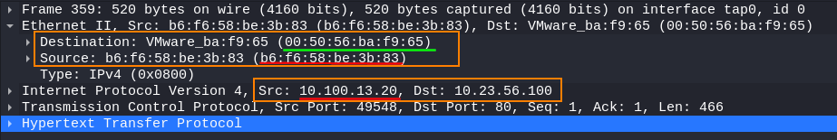

explanation of the packets
MAC addresses of the Hosts in the LAN
• Victim(10.100.13.126) →
00:50:56:ba:7b:97• Attacker(10.100.13.20) →
b6:f6:58:be:3b:83• Original Gateway (10.100.13.1) →
00:50:56:ba:f9:65After that the ICMP redirect are been sent to the victim, we are starting to see “duplicate” packets in the network. In reality they are not duplicate but replicate packets by the attacker.
◇ packet 358 (victim → attacker)
We can observer that while the IP source/destination addresses reflect the correct source/dest IPs for victim/Web server
The MAC address of the destination instead is not the one of the Web Server
but of the Attacker ◇ packet 359 (attacker → Server)
 The attacker essentially replicate the packet sent to him by the victim to the Server, changing the source IP from the one of the victim (10.100.13.126) to the one of the attacker(10.100.13.20)
The real gateway never receives anything from the victim host, only from Kali.